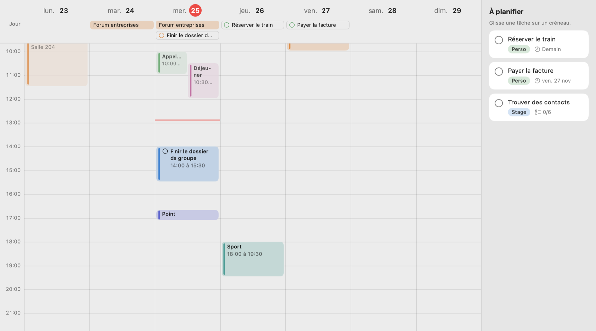
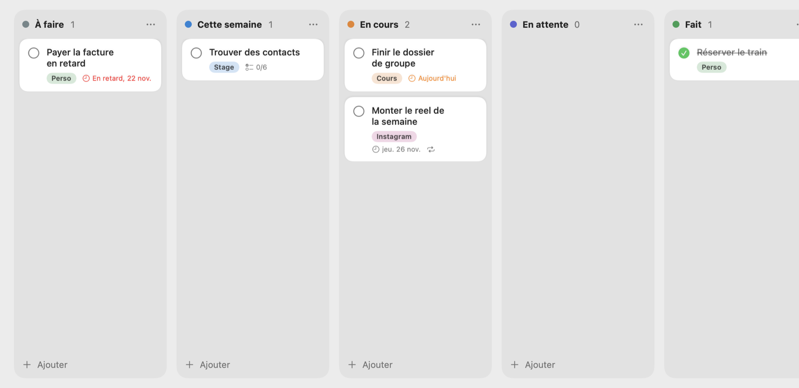
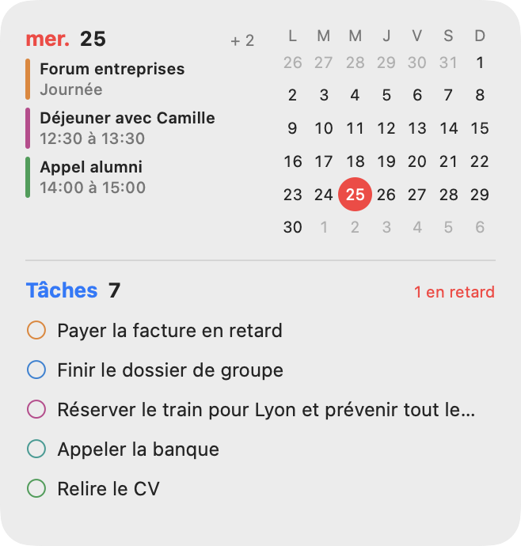

Les tâches et le calendrier, dans la même journée
taches est une application personnelle pour Mac. Elle réunit une liste de tâches, un calendrier et un suivi de candidatures tenu dans Google Sheets.
- Cours de stratégie09:00 à 11:30
- Finir le dossier de groupe
- Relancer un contact
- Sport18:00 à 19:30
Le calendrier montre aussi ce qu'il reste à faire
Les rendez-vous du Mac s'affichent par jour, semaine ou mois. Une tâche se glisse sur un créneau libre.

Un tableau à adapter
Les colonnes, les domaines et les vues se créent et se modifient librement.

L'essentiel sur le bureau
Le widget affiche les prochains rendez-vous et les tâches du jour, à cocher sans ouvrir l'application.

Pourquoi l'application demande un accès à Google Sheets
Elle lit un seul fichier de suivi de candidatures pour créer les cartes de relance. Elle y met à jour un statut, une date, une action ou une note uniquement après validation à l'écran. Les données restent sur le Mac et dans Google Sheets, sans serveur intermédiaire. Le détail est dans les règles de confidentialité.
L'application est réservée à l'usage de la personne qui l'a créée et n'est pas proposée au téléchargement. Les images montrent des données d'exemple.